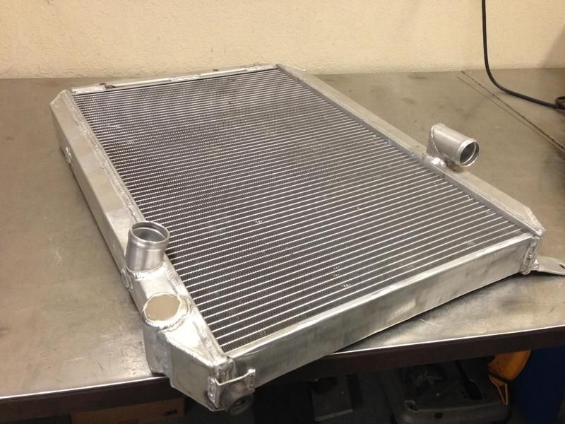
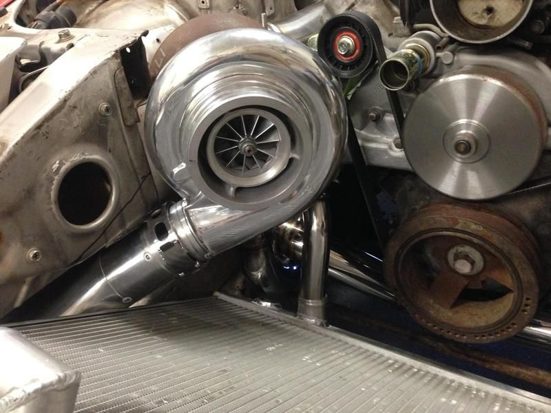
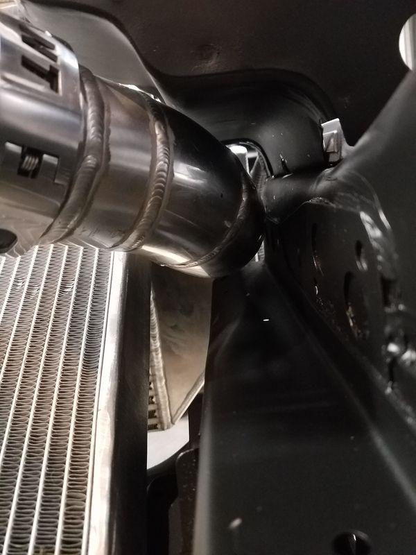

-
So with the 3 core radiators it's a bit tougher to get 2.5" pipe over the radiator. Given that I've had to drop the radiator down about 1" from it's original position (45* to about 37* from ground). I'm assuming this won't drastically change things, I will just have to duct it better or should I even worry?
Here's what it looks like currently…will need to lower radiator another 1/2" or so. IMG957255.jpg IMG954917.jpgLast edited by 300zxturboftw; 07-06-2016, 11:00 PM.Usual Z31 suspect: Garage Queen (aka broken)

-
Well I run the exact radiator in stock location. I run a 3" diameter tube between the radiator & body. It took very minor modification. (removed the bracket for the factory fan shroud) Here's the best pics I could find of my setup( that I already uploaded). These was taken during the fabrication process. As long as the air is directed nicely to the radiator you'll be fine. I personally wouldn't worry too much about it.

Originally posted by Racinjitter -
I just went out to the garage & took a current pic. The body/headlight bucket was not modified. As you can see there's still room even with the 3" diameter tubing. So If angle bothers you enough, this is another ave to consider.
Originally posted by Racinjitter -
Looks good and seems like it would have been the right set up for me but my intercooler is actually same side. Although, now I'm ordering a 2.5" wiggins clamp for my turbo =)Usual Z31 suspect: Garage Queen (aka broken)
-
Thanks. What I did will work on either side of the radiator. But I'd just run it how it currently sits. Wiggins are super nice. Good luck on the buildOriginally posted by 300zxturboftw View Post Originally posted by Racinjitter
Originally posted by Racinjitter -
I did 2.5in over the same rad, just ovaled the pipe a bit where the bumper upper support brace goes across is all.Damn dirty angels....these cars!
Current Daily Driver - 86 Turbo.
Under the cover - THE BANANA… that needs to be re-energized.
sigpic -
Those wire clamps though.....

Copyright © 2006–. All rights reserved. Privacy Policy